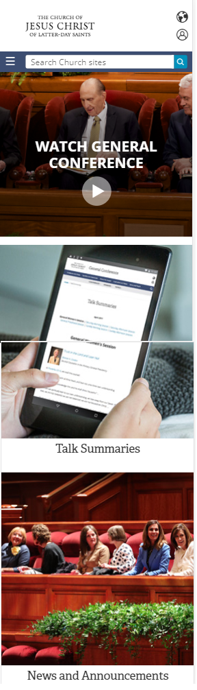
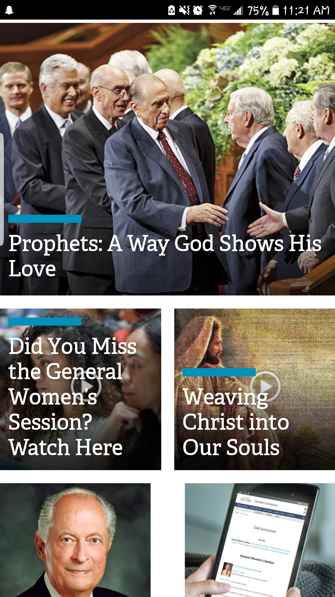
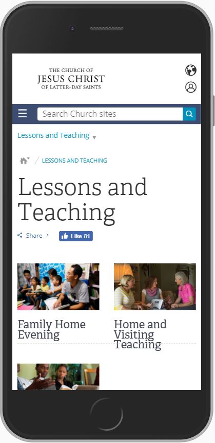
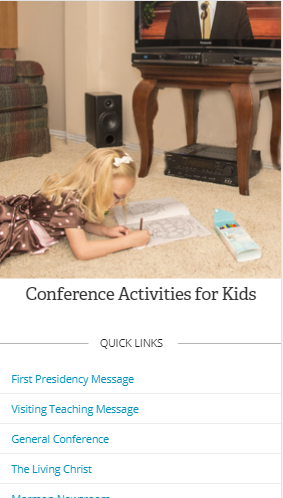
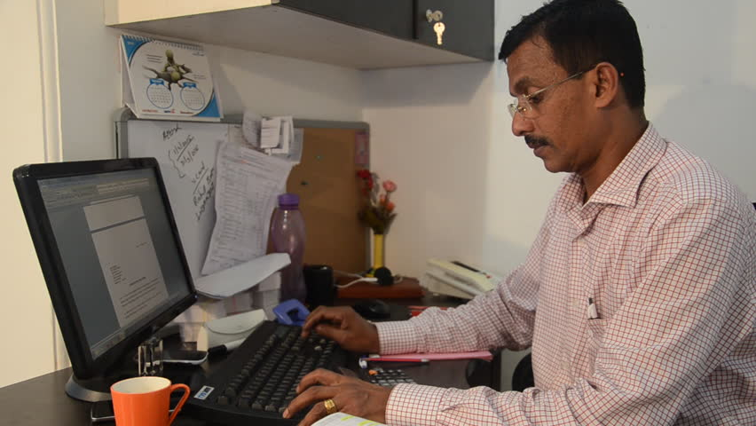

Design - Analysis Assessment
https://www.lds.org/
Design Principles
Proximity — Dallas Parker

In this image, proximity is demonstrated in two ways. 1.) The top, blue, navigation bar groups various search
options the user has access to, including the hamburger icon, grouping various categories of search, as well as the
search bar. 2.) The images related to the various articles and links (Such as the General Conference image and link,
and the articles below, with their various links) which are grouped together based on similarity of theme (like the
"talk summaries", "news announcements", and "view past sessions") which are all related to general conference.
Alignment — Fritz Fevrier
This screen shot shows that the text is centered in the image. Therefore, this example is an alignment center (text-align:center).
Repetition — Tony Lee

Lds.org website use of Repetition
Within the lds.org website, we can see that they use the same font throughout the whole website as well as
using some visual elements such as adding a blue font box in their pictures to capture the user's attention.
Contrast — Trevor Schulz

LDS.org creates a lot of contrast in their website by keeping a simple white background, with multiple image boxes aligned neatly on the screen. The contrast they use is definately geared more towards usability rather than aesthetics. Because of the simple white background, the simple royal blue search/navigation bar is easy to locate on the top. On the mobile version, they tend to get rid of as much text as they can and replace it with simple icons made of black. The designers try to stick with the white/blue/black theme througout the site so that the images that take up the majority of the body can be focussed on.
Typography — Dallas Parker

This image shows an example of how LDS.org utilizes typography. Generally, a simple font is used, so as not to distract from the main content; the image and the link. Also, a smaller blue font is used in this photo, to distinguish links without font.
Site Purpose Statement
Invite others to come unto christ, through sharing a variety of inspirational/helpul media and tools.
Target Audience
- Age: ~ 20 - 60 years old
- Occupation: Religious/Spiritual Inspiration -->
- Income: Anyone with access to the internet.
- Other: Throughout the world, the target audience would be: Members of the church AND those that may show interest in coming to Christ. Members within the United States generally have access to the internet regaurdless of income range, however that's not always the case within or without of the United States.
Persona
- Name: Joe Smith

- Occupation: Bank Manager
- Primary Device: Tablet
- Quote: It's Sunday morning, and Joe Smith is throwing together a lesson for Elder's quorum, because Brother Beck forgot to prepare his lesson and texted in sick... Again. Shame on you Brother Beck.